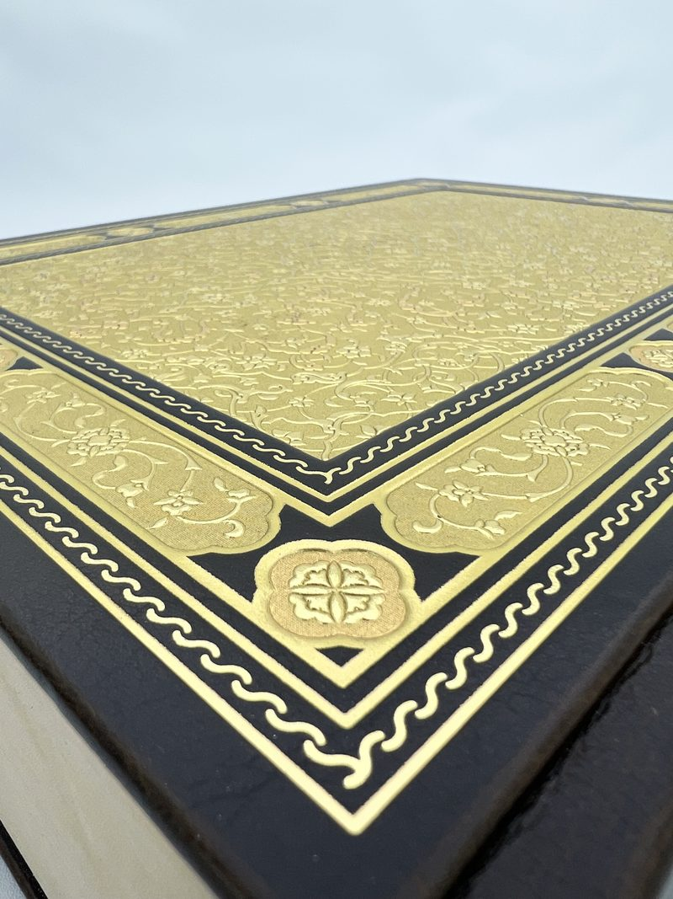

Depth you can feel
Our embossing presses are hand-operated — a choice, not a limitation.

Relief depths of up to 2 mm
Manual pressure and dwell control allow relief depths of up to 2 mm, with clean shoulders and unbroken foil — even on dense Islimi and floral patterns.
Every cover is set, pressed and checked by hand. Where an automated line flattens fine detail, our operators read each pattern and adjust in real time, so the deepest recesses stay crisp and the highlights stay sharp.
Watch the presses at work
Embossing, foiling and casing-in — filmed on the floor of our Istanbul workshop.
Six techniques, one registration standard
Deep embossing up to 2 mm
Pronounced relief with clean shoulders, far beyond what automated lines reach.
Hand-formed raised spine hubs
Classic raised bands, shaped and set by hand across the spine.
Full-length French groove joints
A hinged joint that flexes with use and extends cover life.
Hot foil stamping
Gold, palladium and coloured foils laid down cleanly over intricate tooling.
Art-gilt page edges
Burnished gilt edges that frame the text block and catch the light.
Blind tooling
Foil-free impressions that let the leather grain and pattern speak for themselves.
The right skin for the stamp

Genuine calfskin

Thermo PU leather

Bookcloth cases

hinge joint (French groove)
Foil, relief and gilt at macro scale
Click any detail to enlarge.


See the depth for yourself
Ask for our free sample kit — leather swatches, an embossed cover and a mini traycase, on your desk by DHL in 2–4 days.